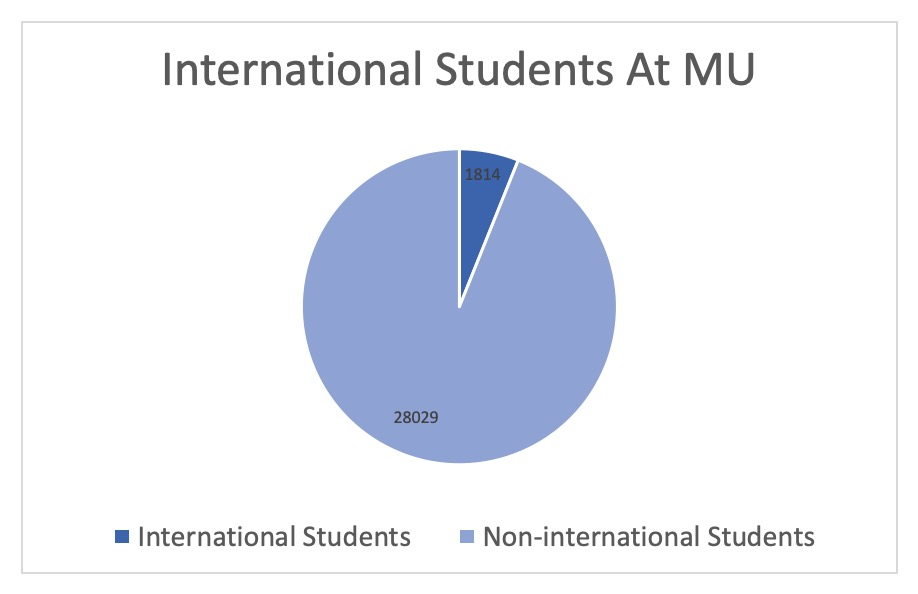

According to College Factual Website, There are around 1,814 international students at Mizzou.
International students make up about 6.1% of the student body.

Among all the international students at MU, 707 are undergraduates.

According to College Factual Website, There are around 1,814 international students at Mizzou.
International students make up about 6.1% of the student body.
Among all the international students at MU, 707 are undergraduates.
The most popular majors at Mizzou with international students are
Computer Information Systems, Journalism, and General Business/Commerce.